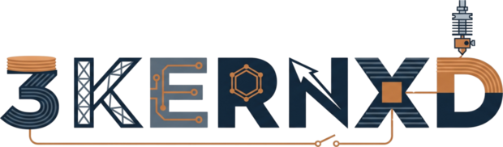
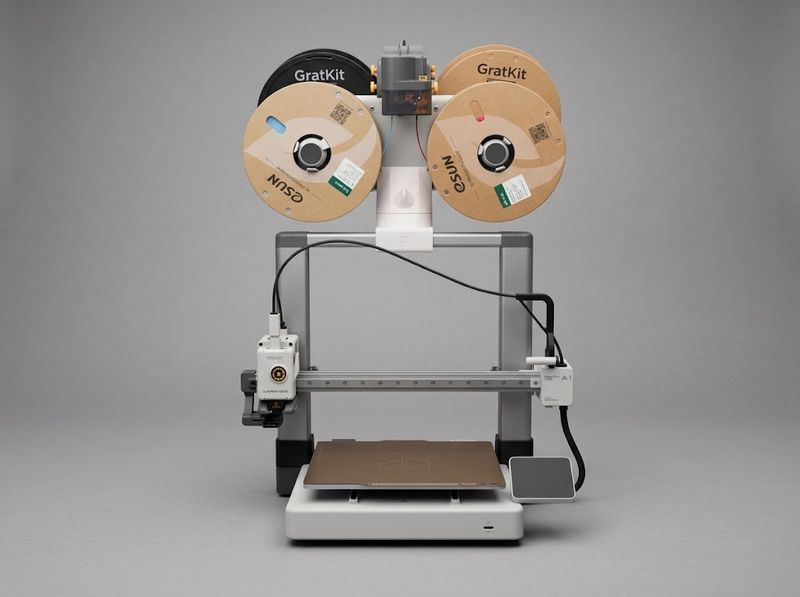

Vorhanden
Geräte und Material
Zwei handelsübliche FDM-Drucker für Kunststoff sowie PLA- und PETG-Filament. Aufgestellt in unseren eigenen Räumen in Hannover.

00%Mehr ist es nicht — und mehr behaupten wir auch nicht. KERNX 3D ist ein kleiner Nebenbereich unseres Unternehmens. Zwei handelsübliche Kunststoffdrucker stehen bereits bei uns. Damit fertigen wir Deko- und Geschenkartikel, Figuren, Vasen und kleine Ordnungshilfen. Alles andere ist ein Ziel, kein Angebot.
Was wir anpacken, wird sichtbar💡was noch kommt, leuchtet genauso.
Kleiner 3D-Druck-Bereich der KERNX BAU UG · HannoverWir haben die Geräte, wir haben das Material, und wir lernen. Aufträge in diesem Bereich hatten wir bisher kaum. Wir zeigen hier deshalb keine Referenzen und keine Produktreihe, sondern nur das, was wir tatsächlich können und vorhaben.

Zwei handelsübliche FDM-Drucker für Kunststoff sowie PLA- und PETG-Filament. Aufgestellt in unseren eigenen Räumen in Hannover.
Deko- und Geschenkartikel, Figuren, Vasen, kleine Ordnungslösungen für Büro, Haushalt und Hobby sowie Sonderanfertigungen nach Kundenwunsch in kleinen Stückzahlen.
Keine eigene Produktserie, kein Katalog, keine Referenzliste, keine Serienfertigung. Wenn das entsteht, schreiben wir es hier hin — vorher nicht.
„3D-Druck“ ist nur ein Verfahren. Entscheidend ist, was damit hergestellt wird. Wir beschränken uns bewusst auf einfache Gegenstände aus Kunststoff, für die keine Zulassung und keine Eintragung in die Handwerksrolle erforderlich ist.
Ohne Mindestmenge und ohne große Formalitäten.
Eine Idee, eine Skizze, ein Foto oder eine fertige 3D-Datei. Beides geht.
Wenn es zu groß, zu genau oder zu belastet ist, sagen wir es ab. Sonst nennen wir Preis und Zeit.
Bei größeren Mengen zuerst ein Musterstück zur Freigabe.
Die früher hier gezeigte Produktgalerie haben wir vollständig entfernt. Die Aufnahmen waren mit Künstlicher Intelligenz erzeugte Bilder und zeigten keine von uns hergestellten Gegenstände.
Das Video und das Foto weiter oben sind eigene Aufnahmen: unser Drucker im Betrieb und unsere Anlage. Weitere Bilder veröffentlichen wir erst, wenn wir eigene, tatsächlich gefertigte Stücke fotografieren können.
Wir fertigen keine geschützten Figuren, Marken oder Designs Dritter. Wer uns eine Datei schickt, bestätigt, dass keine Rechte Dritter entgegenstehen.
Gedruckter Kunststoff ist nicht so belastbar wie ein gefrästes oder gespritztes Teil. Für tragende, sicherheitsrelevante oder dauerhaft belastete Anwendungen ist er nicht geeignet — und dort liefern wir auch nicht.
Schreiben Sie uns kurz, was Sie sich vorstellen. Wenn es zu uns passt, melden wir uns mit Preis und Termin. Wenn nicht, sagen wir Ihnen das ebenso kurz.